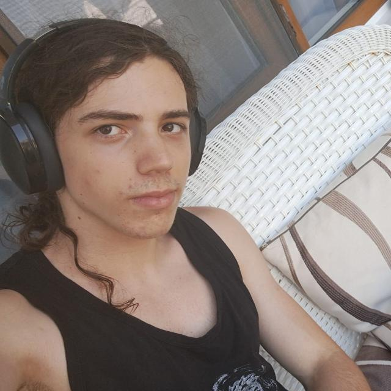

András Vándorffy
Role: the leader guy
- Pushes everyone to work
- Makes sure requirements are met
- Worked mainly on the core of the game
- Testing and debugging. So much debugging…
- Passionate about art
Illia Vladymyrov
Role: the model guy
- Formats code
- Invades (refactors) all the parts of the codebase
- Hates visual part
- Made most of the model and the saving-loading system
Iskren Rusimov
Role: the website guy
- Tells you how badly you lost to the AI
- Set up the Apache server
- Website main
- Passionate about cars and motorsports

Stefan Slubschi
Role: the AI guy
- Makes sure you badly lose to the AI
- Algorithms and more algorithms
- Keeps track of team progress
- Does a bit of everything
- Loves rock climbing, volleyball and music